주택관리사보-1차 (2014-07-19 기출문제)
1과목: 민법
1. 관습법에 관한 설명으로 옳지 않은 것은? (다툼이 있으면 판례에 의함)
- 관습법이란 사회의 거듭된 관행으로 생성된 사회생활규범이 사회구성원들의 법적 확신을 얻어 법적 규범으로 승인된 것이다.
- 관습법에 의해 창설된 물권도 인정된다.
- 사회적 가치관의 변천으로 인하여 관습법이 헌법적 가치에 부합하지 않게 되었다면 그러한 관습법은 더 이상 법적 규범으로서의 효력을 가질 수 없다.
- 사실인 관습은 법령으로서 효력이 없는 단순한 관행으로 법률행위 당사자의 의사를 보충함에 그친다는 점에서 관습법과 구별된다.
- 당사자의 주장ㆍ입증이 없는 한, 법원은 관습법을 재판의 자료로 삼을 수 없다.
(정답률: 58%)

2. 신의성실의 원칙(이하 '신의칙')에 관한 설명으로 옳은 것은? (다툼이 있으면 판례에 의함)
- 상계권의 남용을 판단함에 있어서는 권리남용의 경우에 요구되는 주관적 요건이 반드시 필요하다.
- 신의칙은 법률관계 당사자간의 약정에 의해 그 적용이 배제될 수 있다.
- 강행법규에 반하는 법률행위를 한 자가 스스로 강행법규 위반을 이유로 그 법률행위의 무효를 주장하는 것은 특별한 사정이 없는 한, 신의칙에 반한다.
- 고용관계의 존부를 둘러싼 분쟁은 근로자의 생존과 밀접한 관련을 갖는 것이므로 이에는 신의칙에 기한 실효의 원칙이 적용되지 않는다.
- 신의칙은 권리내용을 구체적으로 형성하는 원칙일 뿐만 아니라 권리행사를 제한하는 원칙이기도 하다.
(정답률: 48%)
3. 권리를 작용 또는 효력에 의해 분류할 때 연결이 옳은 것은? (다툼이 있으면 판례에 의함)
- 상계권 - 청구권
- 지상권자의 지상물매수청구권 - 청구권
- 물권적 청구권 - 형성권
- 보증인의 최고ㆍ검색의 항변권 - 형성권
- 계약해제권 - 형성권
(정답률: 39%)
4. 甲남과 乙녀는 법률상 부부인데, 乙은 태아 A를 임신 중이다. 이에 관한 설명으로 옳지 않은 것은? (다툼이 있으면 판례에 의함)
- A가 살아서 태어났다면 출생신고와 상관없이 권리능력을 취득한다.
- 甲의 동생 丙이 태아인 A를 대리한 甲과의 계약으로 자신의 카메라를 A에게 증여하는 것은 불가능하다.
- 甲이 丁의 음주운전 차량에 치어 사망한 경우, 그 당시 태아인 A는 이후에 출생하였다고 하더라도 丁에 대해 위자료청구권을 행사하지 못한다.
- 의사 戊가 乙을 진료하던 중에 약물을 잘못 투여하여 태아인 A가 사산되었다면 A에게 戊에 대한 손해배상청구권이 인정되지 않는다.
- 甲의 동생 丙은 태아인 A에게 자신의 아파트를 유증할 수 있다
(정답률: 56%)
5. 법정후견에 관한 설명으로 옳지 않은 것은?
- 지방자치단체의 장은 성년후견개시의 심판을 청구할 수 있다.
- 피성년후견인이 단독으로 행한 일용품의 구입은 대가가 과도하더라도 성년후견인이 취소할 수 없다.
- 가정법원이 한정후견개시심판시 피한정후견인이 한정후견인의 동의를 요하는 행위의 범위를 결정하였다면 그 범위내에서 피한정후견인의 행위능력은 제한된다.
- 특정후견은 본인의 의사에 반하여 할 수 없다.
- 가정법원이 피특정후견인에 대하여 성년후견개시심판을 할 때에 종전의 특정후견에 대한 종료 심판을 해야 한다.
(정답률: 40%)
6. 甲은 2007년 1월 1일 여행을 떠난 후에 그 생사를 알 수 없다. 甲에게는 어머니 乙과 아들 丙이 있다. 이에 관한 설명으로 옳은 것은? (다툼이 있으면 판례에 의함)
- 특별한 사정이 없는 한, 乙은 甲에 대한 실종선고를 청구할 수 있다.
- 甲에 대한 실종선고의 청구를 받은 법원은 그 요건의 충족이 인정되더라도 반드시 실종선고를 해야 하는 것은 아니다.
- 2014년 3월 1일 법원이 실종선고를 하였다면 甲은 이 시점에 사망한 것으로 간주된다.
- 甲이 실종선고를 받으면 그의 권리능력은 소멸하므로, 이후 생환한 甲이 실종선고 취소 전 A와 체결한 매매계약은 무효이다.
- 甲에 대한 실종선고 후 甲 소유의 X부동산을 상속받아 이를 선의인 丁에게 매도한 丙은, 후에 실종선고가 취소되면 자신이 선의이더라도 그 받은 이익이 현존하는 한도에서 반환의무를 진다.
(정답률: 52%)
7. 법인의 불법행위능력(민법 제35조)에 관한 설명으로 옳은 것은? (다툼이 있으면 판례에 의함)
- 법인의 손해배상책임이 대표기관의 고의적 불법행위에 기한 것이라 해도 손해발생과 관련하여 피해자의 과실이 있다면 과실상계의 법리는 적용가능하다.
- 실제로는 직무와 관련 없는 대표기관의 행위가 외형상 직무에 관한 것으로 보인다면 피해자가 이에 관해 선의인 한 그 선의에 중과실이 있더라도 법인의 불법행위책임은 성립한다.
- 대표기관이 직무와 관련하여 불법행위를 한 경우 피해자는 민법 제35조(법인의 불법행위능력)에 따른 손해배상과 민법 제756조(사용자의 배상책임)에 따른 손해배상을 선택적으로 청구할 수 있다.
- 법인의 불법행위책임이 성립하면 대표기관은 손해배상책임을 면한다.
- 법인의 불법행위능력에 관한 규정은 권리능력 없는 사단에 유추적용되지 않는다
(정답률: 22%)
8. 민법상 법인의 이사에 관한 설명으로 옳은 것은? (다툼이 있으면 판례에 의함)
- 이사는 대외적으로 법인을 대표하고 대내적으로 법인의 사무를 집행하는 임의기관이다.
- 이사가 수인 있는 경우에는 공동대표가 원칙이다.
- 이사의 대표권제한을 등기하지 않으면 악의의 제3자에게도 대항할 수 없다.
- 이사는 정관 또는 총회의 결의로 금지하지 아니한 사항에 한하여 타인에게 포괄적 대리권을 수여할 수 있다.
- 이사의 결원이 있어 손해가 생길 염려가 있다면 법원은 이해관계인이나 검사의 청구에 의하여 특별대리인을 선임하여야 한다.
(정답률: 35%)
9. 민법상 사단법인의 해산 및 청산에 관한 설명으로 옳지 않은 것은? (다툼이 있으면 판례에 의함)
- 사원총회의 결의로 해산할 수 있다.
- 법인이 해산한 때에는 파산의 경우를 제외하고는 원칙적으로 이사가 청산인이 된다.
- 청산 중의 법인이 청산의 목적범위 외의 매매계약을 새로이 맺어 법인재산을 처분하였다면 그러한 법률행위는 무효이다.
- 청산인은 채권신고기간 내에는 이미 알고 있는 채권자에게 변제할 수 있다.
- 청산종결등기가 경료되었다고 하더라도 청산사무가 종료되지 않았다면 그 범위내에서 법인격은 존속한다.
(정답률: 34%)
10. 법인 아닌 사단에 관한 설명으로 옳지 않은 것은? (다툼이 있으면 판례에 의함)
- 법인 아닌 사단과 민법상의 조합은 일반적으로 그 단체성의 강약을 기준으로 하여 구별된다.
- 법인의 대표권 제한의 등기에 관한 규정은 거래의 안전을 위해 법인 아닌 사단에도 유추적용된다.
- 법인 아닌 사단도 대표자가 있으면 소송의 당사자로 될 수 있다.
- 법인 아닌 사단의 사원이 집합체로서 물건을 소유할 때에는 총유로 한다.
- 공동주택의 입주자대표회의는 특별한 사정이 없는 한, 법인 아닌 사단으로서의 실체를 가진다.
(정답률: 39%)
11. 민법상 물건에 관한 설명으로 옳은 것은? (다툼이 있으면 판례에 의함)
- 무체물은 형체가 없으므로 물건이 될 수 없다.
- 유체물은 관리가능성이 없는 경우에도 물건에 해당한다.
- 피상속인의 유체ㆍ유골은 제사용 재산에 준하여 그 제사주재자에게 승계된다.
- 타인의 토지에서 권원 없이 경작한 수확기의 보리는 부합에 의하여 그 토지의 소유자에게 귀속한다.
- 대체물(代替物)과 부대체물(不代替物)은 당사자의 의사에 따른 구별이다.
(정답률: 52%)
12. 주물과 종물, 원물과 과실에 관한 설명으로 옳지 않은 것은? (다툼이 있으면 판례에 의함)
- 주물 소유자의 사용을 도울 뿐, 주물 자체의 경제적 효용과는 무관한 물건은 종물이 아니다.
- 종물을 주물의 처분에 따르도록 한 민법 규정은 강행규정이다.
- 주물과 종물의 법리는 권리 상호간에도 유추적용될 수 있다.
- 물건의 용법에 의하여 수취하는 산출물은 천연과실이다.
- 매매목적물이 매도인의 이행지체로 인도되지 않고 있고 그에 따라 매수인이 대금을 완제하지 않고 있다면, 특별한 사정이 없는 한 과실은 매도인에게 귀속한다.
(정답률: 40%)
13. 법률행위에 해당하는 것을 모두 고른 것은?
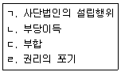
- ㄱ, ㄴ
- ㄱ, ㄹ
- ㄴ, ㄷ
- ㄴ, ㄹ
- ㄷ, ㄹ
(정답률: 55%)
14. 법률행위에 관한 설명으로 옳은 것을 모두 고른 것은?
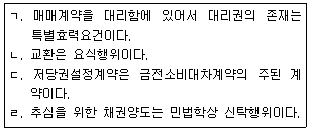
- ㄱ, ㄹ
- ㄴ, ㄷ
- ㄴ, ㄹ
- ㄱ, ㄷ, ㄹ
- ㄴ, ㄷ,
(정답률: 29%)
15. 법률행위의 목적에 관한 설명으로 옳은 것은? (다툼이 있으면 판례에 의함)
- 법률행위의 목적이 법률행위 당시에 구체적으로 확정되어야 그 법률행위는 유효하다.
- 법률행위의 일부가 무효인 경우에는 원칙적으로 그 일부만 무효이다.
- 도박채무가 선량한 풍속에 반하여 무효라면 도박채무에 대하여 양도담보 명목으로 이전해 준 소유권이전등기의 말소를 청구할 수 있다.
- 부동산 이중매매가 반사회질서 법률행위에 해당하여 무효가 되더라도 제2매수인으로부터 다시 취득한 선의의 제3자에 대해서는 이중매매의 무효를 주장할 수 없다
- 법률행위의 성립 당시 그 목적이 물리적으로 가능하더라도 사회통념상 실현할 수 없으면 그 법률행위는 무효이다.
(정답률: 42%)
16. 불공정한 법률행위에 관한 설명으로 옳은 것은? (다툼이 있으면 판례에 의함)
- 피해자의 궁박, 경솔 또는 무경험을 이용하려는 폭리자의 악의는 불공정한 법률행위의 성립요건이 아니다.
- 불공정한 법률행위에는 무효행위의 전환의 법리가 적용될 수 있다.
- '궁박'이라 함은 경제적 원인에 기인한 급박한 곤궁을 의미하며 정신적 또는 심리적 원인에 기인한 것을 의미하는 것은 아니다.
- '무경험'이라 함은 거래일반에 대한 경험부족이 아니라 해당 법률행위가 속한 특정영역에 있어서의 경험부족을 의미한다.
- 불공정한 법률행위에 해당하는가를 판단할 때 대리인이 법률행위를 한 경우에는 궁박상태는 대리인을 기준으로, 경솔 또는 무경험은 본인을 기준으로 한다.
(정답률: 31%)
17. 착오에 관한 설명으로 옳지 않은 것은? (다툼이 있으면 판례에 의함)
- 표의자의 중대한 과실로 착오가 있는 때에는 표의자는 착오를 이유로 그 의사표시를 취소하지 못한다.
- 부동산 매매에 있어서 시가에 관한 착오는 일반적으로 중요부분에 관한 착오라고 할 수 없다.
- 착오에 의하여 출연한 재단법인의 설립자는 착오를 이유로 출연의 의사표시를 취소할 수 있다.
- 동기의 착오가 상대방에 의하여 유발된 경우에 동기의 표시여부와 무관하게 의사표시를 취소할 수 있다.
- 매도인이 매매계약을 적법하게 해제하였다면 매수인은 그 해제로 인한 불이익을 피하기 위하여 더 이상 착오를 이유로 그 매매계약을 취소할 수 없다.
(정답률: 38%)
18. 의사표시의 효력발생에 관한 설명으로 옳지 않은 것은? (다툼이 있으면 판례에 의함)
- 상대방 있는 의사표시는 표의자가 그 통지를 발송한 후 사망하여도 그 후 도달한 의사표시의 효력에는 영향이 없다.
- 의사표시의 도달이란 사회통념상 상대방이 통지의 내용을 알 수 있는 객관적 상태에 놓여 있는 경우를 의미한다.
- 제한능력자임을 이유로 한 법률행위의 취소의 의사표시는 상대방에게 그 의사표시를 발신한 때에 효력이 발생한다.
- 특별한 사정이 없는 한, 의사표시가 도달한 이후에는 상대방이 도달사실을 알기 전이라도 표의자가 이를 철회할 수 없다.
- 의사표시의 상대방이 의사표시를 받은 때에 제한능력자인 경우 표의자는 원칙적으로 그 의사표시로써 대항할 수 없다.
(정답률: 34%)
19. 표현대리에 관한 설명으로 옳지 않은 것은? (다툼이 있으면 판례에 의함)
- 권한을 넘은 표현대리의 경우 일상가사대리권은 기본대리권이 될 수 있다.
- 대리행위가 권한을 넘은 표현대리에 해당하는지 여부를 판단할 때, 정당한 이유의 존부는 대리행위 당시를 기준으로 판단한다.
- 복임권 없는 대리인에 의하여 선임된 복대리인이 대리행위를 한 경우에도 표현대리가 인정될 수 있다.
- 유권대리에 해당한다는 주장 속에는 표현대리에 해당한다는 주장도 포함되어 있다.
- 법정대리의 경우에도 대리권 소멸 후의 표현대리가 성립될 수 있다.
(정답률: 41%)
20. 복대리에 관한 설명으로 옳은 것은? (다툼이 있으면 판례에 의함)
- 복대리인은 대리인의 대리인이다.
- 복대리인의 대리권 범위는 대리인의 대리권 범위를 넘지 못한다.
- 임의대리인은 본인의 승낙이 있는 경우에 한하여 복대리인을 선임할 수 있다.
- 법정대리인이 부득이한 사유로 복대리인을 선임한 경우, 그 선임ㆍ감독에 관한 책임을 면한다.
- 대리인의 대리권 소멸은 복대리인의 대리권 소멸에 전혀 영향을 미치지 않는다.
(정답률: 36%)
21. 법률행위의 취소에 관한 설명으로 옳은 것은? (다툼이 있으면 판례에 의함)
- 임의대리인이 취소권을 행사하려면 취소권의 행사에 관한 본인의 수권행위가 있어야 한다.
- 제한능력자가 스스로 행한 취소할 수 있는 법률행위를 취소하려면 법정대리인의 동의를 얻어야 한다.
- 사기에 의해 매매계약을 체결한 후 10년이 경과하였더라도, 속았다는 사실을 안 지 3년이 지나지 않았다면 그 매매계약을 취소할 수 있다.
- 취소할 수 있는 법률행위의 추인은 취소권의 포기이므로 취소권자라면 누구나 언제든지 할 수 있다.
- 법정추인은 법이 정한 사유가 발생하면 취소권자의 이의유보와 무관하게 추인한 것으로 간주하는 제도이다.
(정답률: 32%)
22. 조건과 기한에 관한 설명으로 옳지 않은 것은? (다툼이 있으면 판례에 의함)
- 법률행위가 정지조건부 법률행위에 해당한다는 사실은 그 효과발생을 다투려는 자에게 주장ㆍ입증책임이 있다.
- 조건이 법률행위 당시 이미 성취된 것인 때에는 그 조건이 해제조건이면 조건 없는 법률행위로 한다.
- 조건의 성취가 미정인 권리라도 일반규정에 의하여 보존, 처분, 상속뿐만 아니라 담보로 할 수 있다.
- 기한이익상실의 특약은 명백히 정지조건부 기한이익상실의 특약이라고 볼 만한 특별한 사정이 없는 한, 형성권적 기한이익상실의 특약으로 추정된다.
- 기한은 채무자의 이익을 위한 것으로 추정한다.
(정답률: 45%)
23. 소멸시효와 제척기간에 관한 설명으로 옳은 것은? (다툼이 있으면 판례에 의함)
- 채권양도의 통지만으로도 제척기간의 준수에 필요한 권리의 재판 외 행사로 볼 수 있다.
- 점유물반환청구권은 실체법상의 권리이므로 그 제척기간은 출소기간을 의미하지 않는다.
- 소멸시효기간은 법률행위에 의해 연장할 수 없으나, 제척기간은 당사자 사이의 약정으로 연장할 수 있다.
- 소멸시효 완성 후에 채무승인이 있었다면, 곧바로 소멸시효 이익의 포기가 있은 것으로 간주된다.
- 공유관계가 존속하는 한, 공유물분할청구권만이 독립하여 시효소멸하지 않는다.
(정답률: 36%)
24. 소멸시효에 관한 설명으로 옳지 않은 것은? (다툼이 있으면 판례에 의함)
- 매수인이 매매목적 부동산을 인도받아 점유하고 있다면, 그의 매도인에 대한 소유권이전등기청구권은 시효소멸하지 않는다.
- 소유권이전등기의무의 이행불능으로 인한 전보배상청구권의 소멸시효는 이전등기의무가 이행불능으로 된 때로부터 진행한다.
- 부동산 매도인의 매매대금청구권과 매수인의 소유권이전등기청구권은 서로 동시이행의 관계에 있으므로, 매도인에게 동시이행의 항변권이 인정되는 한, 매매대금청구권의 소멸시효는 진행하지 않는다.
- 시효의 진행 중 그 완성 전에 이루어진 채무의 일부변제는 특별한 사정이 없는 한, 채무승인행위로서 시효중단사유에 해당한다.
- 정지조건부 채권의 소멸시효는 그 조건이 성취한 때로부터 진행한다.
(정답률: 28%)
25. 물권적 청구권에 관한 설명으로 옳은 것은? (다툼이 있으면 판례에 의함)
- 소유권에 기한 물권적 청구권도 소멸시효에 걸린다.
- 소유물반환청구권을 행사하기 위해서는 상대방의 귀책사유를 요한다.
- 소유권에 기한 방해제거청구권은 이미 종료된 방해결과의 제거를 내용으로 할 수 없다.
- 소유권을 양도하면서 물권적 청구권만을 여전히 양도인에게 유보시켜 놓을 수 있다.
- 직접점유자의 점유가 침탈된 경우 간접점유자는 원칙적으로 직접 자신에게 침탈물을 반환할 것을 청구할 수 있다.
(정답률: 40%)
26. 등기의 효력에 관한 설명으로 옳지 않은 것은? (다툼이 있으면 판례에 의함)
- 부동산에 관하여 소유권이전등기가 경료되어 있는 경우 등기원인 사실에 관한 입증이 부족하다는 이유로 그 등기를 무효라고 단정할 수 없다.
- 등기부상 소유권이전등기의 등기절차가 적법하게 진행되지 않은 것으로 볼만한 의심스러운 사정이 입증된 경우에는 그 등기의 추정력은 상실된다.
- 등기부상 명의자를 소유자로 믿고 그 부동산을 매수하여 점유하는 자는 특별한 사정이 없는 한, 과실 없는 점유자이다.
- 멸실회복등기에 있어 전(前) 등기의 접수년월일 등이 각 불명이라고 기재되었다면 특별한 사정이 없는 한, 이는 등기공무원에 의하여 적법하게 수리되고 처리된 것이라고 추정되지 않는다.
- 부동산에 관하여 소유권이전등기가 경료되어 있는 경우, 등기명의자는 그 전의 소유자에 대하여도 적법한 등기원인에 의하여 소유권을 취득한 것으로 추정된다.
(정답률: 39%)
27. 점유에 관한 설명으로 옳은 것은? (다툼이 있으면 판례에 의함)
- 과실을 취득한 선의의 점유자는 회복자를 상대로 그 점유물에 대하여 지출한 통상의 필요비의 상환을 청구할 수 없다.
- 선의의 점유자가 본권에 관한 소에서 패소하면 그 소에서 패소한 때부터 악의의 점유자로 간주된다.
- 점유자는 선의ㆍ무과실로 점유하는 것으로 추정되므로, 점유자에게 과실 있음을 주장하는 자는 이를 증명할 책임이 있다.
- 폭력 또는 은비에 의한 점유자도 선의인 경우 점유물의 과실을 취득할 수 있다.
- 유익비에 관하여는 그 가액의 증가가 현존한 경우에 한하여 점유자의 선택에 좇아 그 지출금액이나 증가액의 상환을 청구할 수 있다.
(정답률: 35%)
28. 공유에 관한 설명으로 옳지 않은 것은?
- 공유자의 지분은 특별한 사정이 없는 한, 균등한 것으로 추정한다.
- 공유물의 보존행위는 공유자 각자가 할 수 있다.
- 공유자는 공유자 과반수의 찬성으로 공유물을 처분할 수 있다.
- 공유자는 5년 내의 기간으로 공유물을 분할하지 아니할 것을 약정할 수 있다.
- 공유자 중 1인이 그 지분을 포기하거나 상속인 없이 사망한 때에는 그 지분은 다른 공유자에게 각 지분의 비율로 귀속한다.
(정답률: 40%)
29. 지상권에 관한 설명으로 옳지 않은 것은?
- 지상권은 저당권의 목적이 될 수 있다.
- 지상권자는 지상권의 목적인 토지를 자신의 권리의 존속기간 내에 타인에게 임대할 수 없다.
- 지상권자는 지상권에 기하여 물권적 반환청구권 또는 방해배제청구권을 행사할 수 있다.
- 지상권자가 2년분 이상의 지료를 과실로 지급하지 않으면 지상권설정자는 지상권의 소멸을 청구할 수 있다.
- 지상권자는 인접지의 수목뿌리가 경계를 넘은 때에는 특별한 사정이 없는 한, 그 뿌리를 임의로 제거할 수 있다.
(정답률: 40%)
30. 전세권에 관한 설명으로 옳지 않은 것은? (다툼이 있으면 판례에 의함)
- 전세권은 건물에 한하여 설정할 수 있다.
- 기존 채권으로도 전세금의 지급에 갈음할 수 있다.
- 전세권자는 목적물에 대하여 그 통상의 관리에 속한 수선을 하여야 한다.
- 전세권을 설정하기로 합의하고 등기하지 않으면, 전세권은 성립하지 않는다.
- 원칙적으로 전세권 존속기간 중에는 전세금반환채권을 확정적으로 분리하여 양도할 수 없다.
(정답률: 42%)
31. 유치권, 질권에 관한 설명으로 옳은 것을 모두 고른 것은? (다툼이 있으면 판례에 의함)
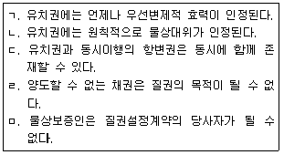
- ㄱ, ㄴ
- ㄱ, ㅁ
- ㄴ, ㄷ
- ㄷ, ㄹ
- ㄹ, ㅁ
(정답률: 57%)
32. 저당권에 관한 설명으로 옳지 않은 것은? (다툼이 있으면 판례에 의함)
- 저당권의 효력은 원칙적으로 저당부동산의 종물에 미친다.
- 저당부동산의 제3취득자는 경매인(競買人)이 될 수 있다.
- 저당권은 장래의 채권을 담보하기 위하여 설정될 수 있다.
- 저당권설정등기가 원인 없이 말소되었더라도 그로 인해 저당권이 소멸하는 것은 아니다.
- 저당부동산의 매매로 인한 매매대금청구권에 대한 물상대위는 인정된다.
(정답률: 34%)
33. 채권자취소권에 관한 설명으로 옳은 것은? (다툼이 있으면 판례에 의함)
- 정지조건부 채권은 특별한 사정이 없는 한, 피보전채권이 될 수 없다.
- 특정물에 대한 소유권이전등기청구권은 특별한 사정이 없는 한, 피보전채권이 될 수 있다.
- 상속을 포기하는 행위는 재산권에 관한 법률행위이므로 특별한 사정이 없는 한, 채권자취소권의 대상이 된다.
- 채권양도가 사해행위에 해당하지 않는다면, 그 이후에 이루어진 채권양도 통지만이 따로 채권자취소권의 대상이 될 수는 없다.
- 채권자취소권은 채권자가 채무자를 피고로 하여 자신의 이름으로 재판상 행사하여야 한다.
(정답률: 36%)
34. 변제에 관한 설명으로 옳은 것은? (다툼이 있으면 판례에 의함)
- 변제할 정당한 이익이 없는 자가 변제를 한 경우, 그 변제자는 채권자의 승낙이 없더라도 변제와 동시에 법률상 당연히 채권자를 대위한다.
- 채권의 준점유자에 대한 변제는 변제자가 선의ㆍ무과실인 경우에 한하여 변제로서의 효력이 인정된다.
- 법정변제충당을 위한 변제이익은 특별한 사정이 없는 한, 채권자를 기준으로 판단하여야 한다.
- 채권자의 대리인이라고 하면서 채권을 행사하는 자는 특별한 사정이 없는 한, 채권의 준점유자에 해당하지 않는다.
- 채무자가 채무변제를 위하여 타인의 물건을 채권자에게 인도하였다면 이는 유효한 변제이므로 특별한 사정이 없는 한, 더 이상 누구도 채권자에게 그 물건의 반환을 청구할 수 없다.
(정답률: 35%)
35. 계약해제에 관한 설명으로 옳지 않은 것은? (다툼이 있으면 판례에 의함)
- 매수인이 미리 자신의 채무를 이행할 의사가 없음을 분명히 표시한 경우, 특별한 사정이 없는 한, 매도인은 자기 채무의 이행제공이나 최고 없이 계약을 해제할 수 있다.
- 소제기의 방식으로 해제권을 행사한 이후 그 소를 취하하더라도 그 해제권행사의 효력에는 영향이 없다.
- 유동적 무효의 상태에 있는 토지거래계약에 있어서 채무불이행을 이유로 한 계약해제는 인정되지 않는다.
- 계약을 해제한 자는, 계약해제의 의사표시 전에 해제가능성을 알면서도 그 해제와 양립되지 않는 법률관계를 가진 제3자에 대하여 계약해제에 따른 법률효과를 주장할 수 있다.
- 채무불이행으로 인한 계약의 해제는 손해배상의 청구에 영향을 미치지 않는다.
(정답률: 27%)
36. '물건의 하자'를 이유로 한 매도인의 담보책임에 관한 설명으로 옳은 것을 모두 고른 것은? (다툼이 있으면 판례에 의함)
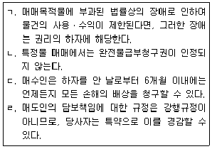
- ㄱ, ㄴ
- ㄱ, ㄹ
- ㄴ, ㄷ
- ㄴ, ㄹ
- ㄷ, ㄹ
(정답률: 20%)
37. 임대차에 관한 설명으로 옳지 않은 것은? (다툼이 있으면 판례에 의함)
- 임차인이 비용상환청구권을 미리 포기하기로 하는 약정은 특별한 사정이 없는 한, 임차인에게 일방적으로 불리한 것이므로 무효이다.
- 임차인이 임대인의 동의 없이 임차권을 양도한 경우, 임대인은 원칙적으로 임대차계약을 해지할 수 있다.
- 임대인은 임대차계약이 존속하는 동안 임차물을 계약에서 정한 바에 따라 임차인의 통상의 사용ㆍ수익에 적합한 상태로 유지하게 할 의무가 있다.
- 임대인이 임차물의 보존에 필요한 행위를 하는 경우, 임차인은 원칙적으로 이를 거절하지 못한다.
- 임차물의 일부가 임차인의 과실 없이 멸실 기타의 사유로 사용ㆍ수익할 수 없게 된 경우, 임차인은 그 부분의 비율에 의한 차임의 감액을 청구할 수 있다.
(정답률: 34%)
38. 도급에 관한 설명으로 옳지 않은 것은? (다툼이 있으면 판례에 의함)
- 수급인이 이행보조자를 사용하더라도 특별한 사정이 없는 한, 그것만으로 채무불이행이 성립하지는 않는다.
- 완성된 목적물의 인도와 보수의 지급은 원칙적으로 동시이행의 관계에 있다.
- 수급인이 재료의 전부 또는 주요부분을 제공하여 건물을 완성하였더라도 당사자 사이에 특약이 있었다면, 도급인은 그 건물의 소유권을 원시취득할 수 있다.
- 완성된 건물의 하자로 인하여 계약의 목적을 달성할 수 없는 경우, 도급인은 계약을 해제할 수 있다.
- 수급인이 일을 완성하기 전에는 도급인은 수급인이 입게 될 손해를 배상하고 계약을 해제할 수 있다.
(정답률: 41%)
39. 위임에 관한 설명으로 옳지 않은 것은? (다툼이 있으면 판례에 의함)
- 수임인은 위임의 본지에 따라 선량한 관리자의 주의로써 위임사무를 처리하여야 한다.
- 수임인은 위임사무의 처리로 인하여 받은 금전 기타의 물건 및 그 수취한 과실을 위임인에게 인도하여야 한다.
- 위임사무의 처리에 비용을 요하는 때에는 위임인은 수임인의 청구에 의하여 이를 선급하여야 한다.
- 위임계약에 따라 수임인이 사무처리를 시작하였다면 위임인은 원칙적으로 더 이상 위임계약을 해지하지 못한다.
- 수임인은 자기에 갈음하여 타인에게 위임사무를 독자적으로 처리하게 하지 못함이 원칙이다.
(정답률: 30%)
40. 부당이득에 관한 설명으로 옳지 않은 것은? (다툼이 있으면 판례에 의함)
- 법률상 원인 없이 타인의 재산 또는 노무로 인하여 얻은 이익을 부당이득이라 한다.
- 부당이득반환의 대상이 되는 이득은 실질적 이득을 말한다.
- 수익자가 받은 이익이 손실자의 손실보다 큰 경우에는 손실의 범위에서 반환하면 된다.
- 악의의 수익자는 그 받은 이익에 이자를 붙여 반환하고 손해가 있으면 이를 배상하여야 한다.
- 불법원인급여임을 이유로 부당이득반환청구가 부정되더라도 물권적 청구권을 근거로 그 급부의 반환을 청구할 수 있다.
(정답률: 47%)
2과목: 회계원리
41. 재무제표 표시에 관한 설명으로 옳지 않은 것은?
- 재무제표의 목적은 정보이용자의 경제적 의사결정에 유용한 정보를 제공하는 것이다.
- 부적절한 회계정책은 이에 대하여 공시나 주석 또는 보충 자료를 통해 설명함으로써 정당화될 수 있다.
- 재무제표에 인식되는 금액은 추정이나 판단에 의한 정보를 포함한다.
- 당기 재무제표를 이해하는 데 목적적합하다면 서술형 정보의 경우에도 비교정보를 포함한다.
- 재무제표의 작성 기준과 구체적 회계정책에 대한 정보를 제공하는 주석은 재무제표의 별도 부분으로 표시할 수 있다.
(정답률: 40%)
42. 수익의 인식 및 측정에 관한 설명으로 옳은 것은?
- 거래와 관련된 경제적 효익의 유입가능성이 높지 않더라도 수익금액을 신뢰성 있게 측정할 수 있다면 수익을 인식할 수 있다.
- 용역제공거래의 결과를 신뢰성 있게 추정할 수 있다면 용역의 제공으로 인한 수익은 용역의 제공이 완료된 시점에 인식한다.
- 판매자가 판매대금의 회수를 확실히 할 목적만으로 해당 재화의 법적 소유권을 계속 가지고 있다면 소유에 따른 중요한 위험과 보상이 이전되었더라도 해당 거래를 수익으로 인식하지 않는다.
- 수익으로 인식한 금액이 추후에 회수가능성이 불확실해지는 경우에는 인식한 수익금액을 조정할 수 있다.
- 동일한 거래나 사건에 관련된 수익과 비용은 동시에 인식한다. 그러나 관련된 비용을 신뢰성 있게 측정할 수 없다면 수익을 인식할 수 없다.
(정답률: 8%)
43. 유용한 재무정보의 질적 특성에 관한 설명으로 옳은 것은?
- 목적적합성과 충실한 표현은 보강적 질적 특성이다.
- 동일한 경제적 현상에 대해 대체적인 회계처리방법을 허용하면 비교가능성이 감소한다.
- 재무정보가 예측가치를 갖기 위해서는 제공되는 정보 그 자체가 예측치 또는 예상치이어야 한다.
- 재무정보의 제공자와는 달리 이용자의 경우에는 제공된 정보를 분석하고 해석하는 데 원가가 발생하지 않는다.
- 재무정보가 과거 평가를 확인하거나 변경시킨다면 예측가치를 갖는다.
(정답률: 35%)
44. 다음 자료를 이용하여 계산한 기말 자본총액은?
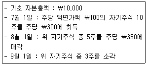
- ￦7,850
- ￦8,150
- ￦8,500
- ￦8,750
- ￦9,65
(정답률: 20%)
45. 다음 자료를 이용하여 계산한 영업활동순현금흐름은?
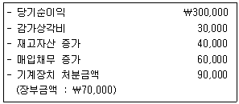
- ￦270,000
- ￦290,000
- ￦310,000
- ￦330,000
- ￦350,00
(정답률: 15%)
46. 다음 자료를 이용하여 계산된 20×1년도 재무활동순현금흐름은? (단, 이자지급은 재무활동으로 분류하며, 납입자본의 변동은 현금 유상증자에 의한 것이다.)
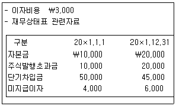
- ￦4,000
- ￦13,000
- ￦14,000
- ￦15,000
- ￦16,000
(정답률: 23%)
47. (주)한국은 제품매출액의 3%에 해당하는 금액을 제품보증비용(보증기간 2년)으로 추정하고 있다. 20×1년의 매출액과 실제 보증청구로 인한 보증비용 지출액은 다음과 같다. 20×2년 포괄손익계산서의 보증활동으로 인한 비용과 20×2년 말 재무상태표의 충당부채 잔액은? (단, (주)한국은 20×1년 초에 설립되었으며, 20×2년의 매출은 없다고 가정한다.)
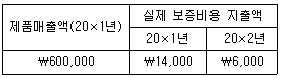
- 제품보증비: ￦2,000, 충당부채 : ￦0
- 제품보증비: ￦3,000, 충당부채 : ￦0
- 제품보증비: ￦4,000, 충당부채 : ￦0
- 제품보증비: ￦5,000, 충당부채 : ￦4,000
- 제품보증비: ￦6,000, 충당부채 : ￦4,000
(정답률: 30%)
48. (주)한국은 20×1년 1월 1일 건물을 ￦1,000,000(내용연수 8년, 잔존가치 ￦200,000)에 취득하여 정액법으로 감가상각하고 있다. 20×4년 1월 1일 (주)한국은 감가상각방법을 연수합계법으로 변경하였으며, 잔존가치를 ￦40,000으로 재추정하였다. 20×4년의 감가상각비는?
- ￦44,000
- ￦46,667
- ￦100,000
- ￦220,000
- ￦233,333
(정답률: 24%)
49. 집합손익 계정의 차변 합계가 ￦250,000이고, 대변 합계가 ￦300,000일 경우, 마감분개로 옳은 것은? (단, 전기이월미처리결손금은 없다.)
- 차 변 : 집합손익 ￦50,000, 대 변 : 자본잉여금 ￦50,000
- 차 변 : 집합손익 ￦50,000, 대 변 : 이익잉여금 ￦50,000
- 차 변 : 자본잉여금 ￦50,000, 대 변 : 집합손익 ￦50,000
- 차 변 : 이익잉여금 ￦50,000, 대 변 : 집합손익 ￦50,000
- 마감분개 필요없음
(정답률: 30%)
50. 다음 중 결산시점에서 장부를 마감하기 전 수정분개를 통하여 다른 계정으로 대체되어 잔액이 0이 되는 계정으로만 묶인 것은? (단, 재고자산은 실지재고조사법을 적용한다.) (문제 오류로 실제 시험에서는 모두 정답처리 되었습니다. 여기서는 1번을 누르면 정답 처리 됩니다.)
- 매입, 매입환출, 매입운임
- 매출, 매출환입, 매출운반비
- 매입, 매입채무, 매출원가
- 매출, 매출채권, 매출원가
- 매출, 매출할인, 매출에누리
(정답률: 33%)
51. (주)한국은 20×1년 말 토지(유형자산)를 ￦1,000에 취득하였다. 대금의 50%는 취득 시 현금 지급하고, 나머지는 20×2년 5월 1일에 지급할 예정이다. 토지거래가 없었을 때와 비교하여, 20×1년 말 유동비율과 총자산순이익률의 변화는? (단, 토지거래가 있기 전 유동부채가 있으며, 20×1년 당기순이익이 보고되었다.)
- 유동비율 : 증가, 총자산순이익률 : 증가
- 유동비율 : 증가, 총자산순이익률 : 감소
- 유동비율 : 감소, 총자산순이익률 : 증가
- 유동비율 : 감소, 총자산순이익률 : 불변
- 유동비율 : 감소, 총자산순이익률 : 감소
(정답률: 7%)
52. (주)한국의 영업주기(상품의 매입시점부터 판매 후 대금회수 시점까지의 기간)는 180일이다. 다음 20×1년 자료를 이용하여 계산한 매출액은? (단, 매입과 매출은 전액 외상거래이고, 1년은 360일로 가정한다.)
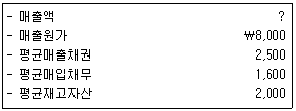
- ￦8,333
- ￦8,833
- ￦9,000
- ￦10,000
- ￦12,000
(정답률: 0%)
53. 회계정보의 기능 및 역할, 적용환경에 관한 설명으로 옳지 않은 것은?
- 외부 회계감사를 통해 회계정보의 신뢰성이 제고된다.
- 회계정보의 수요자는 기업의 외부이용자뿐만 아니라 기업의 내부이용자도 포함된다.
- 회계정보는 한정된 경제적 자원이 효율적으로 배분되도록 도와주는 기능을 담당한다.
- 회계감사는 재무제표가 일반적으로 인정된 회계기준에 따라 적정하게 작성되었는지에 대한 의견표명을 목적으로 한다.
- 모든 기업은 한국채택국제회계기준을 적용하여야 한다.
(정답률: 43%)
54. 20×1년 말 재무상태표의 선수이자는 ￦1,000, 미수이자의 잔액은 없다. 20×2년 말 재무제표 항목이 다음과 같을 때, 20×2년도 이자의 현금수령액은?
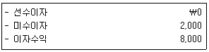
- ￦0
- ￦1,000
- ￦3,000
- ￦5,000
- ￦8,000
(정답률: 36%)
55. 다음 자료를 이용하여 산출된 기말 부채총액은? (단, 기타포괄손익은 없다.)
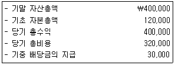
- ￦50,000
- ￦90,000
- ￦200,000
- ￦230,000
- ￦280,000
(정답률: 40%)
56. 재무제표 작성원칙에 관한 설명으로 옳지 않은 것은?
- 전체 재무제표(비교정보를 포함)는 적어도 1년마다 작성한다.
- 재무제표의 표시통화는 천 단위 이상으로 표시할 수 없다. 예를 들어, 백만 단위로 표시할 경우 정보가 지나치게 누락되어 이해가능성이 훼손될 수 있다.
- 자산과 부채, 수익과 비용은 상계하지 않고 구분하여 표시하는 것을 원칙으로 한다.
- 한국채택국제회계기준이 달리 허용하거나 요구하는 경우를 제외하고는 당기 재무제표에 보고되는 모든 금액에 대해 전기 비교정보를 표시한다.
- 상이한 성격이나 기능을 가진 항목은 구분하여 표시한다. 다만 중요하지 않은 항목은 성격이나 기능이 유사한 항목과 통합하여 표시할 수 있다.
(정답률: 34%)
57. 충당부채 및 우발부채에 관한 설명으로 옳은 것은?
- 충당부채와 우발부채는 재무제표 본문에 표시되지 않고 주석으로 표시된다.
- 자원의 유출가능성이 높고, 금액의 신뢰성 있는 추정이 가능한 경우 충당부채로 인식한다.
- 자원의 유출가능성이 높지 않더라도, 금액의 신뢰성 있는 추정이 가능한 경우 충당부채로 인식한다.
- 금액의 신뢰성 있는 추정이 가능하지 않더라도, 자원의 유출가능성이 높은 경우 충당부채로 인식한다.
- 금액의 신뢰성 있는 추정이 가능하더라도, 자원의 유출가능성이 높지 않은 경우에는 주석에 공시하지 않는다.
(정답률: 45%)
58. 다음은 (주)한국의 1월 동안 거래내역이다. 선입선출법과 이동평균법에 따라 계산된 매출원가는?
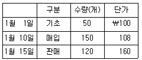
- 선입선출법 : ￦12,960, 이동평균법 : ￦12,840
- 선입선출법 : ￦12,560, 이동평균법 : ￦12,840
- 선입선출법 : ￦12,720, 이동평균법 : ￦12,560
- 선입선출법 : ￦12,840, 이동평균법 : ￦12,720
- 선입선출법 : ￦12,560, 이동평균법 : ￦12,720
(정답률: 35%)
59. 다음 자료를 이용하여 계산된 (주)한국의 20×1년 기말재고자산은?
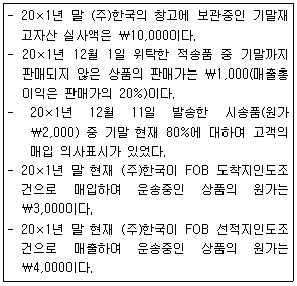
- ￦11,200
- ￦11,400
- ￦14,200
- ￦15,200
- ￦18,200
(정답률: 20%)
60. 20×1년 초 설립한 (주)한국의 기말상품재고와 관련된 자료는 다음과 같다. 당기상품매입액이 ￦10,000일 때, 20×1년 말 재고자산 장부금액과 20×1년도 매출원가는? (단, 재고자산의 항목은 서로 유사하지 않으며, 재고자산평가손익은 매출원가에 가감한다.)
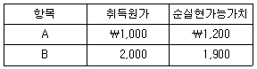
- 장부금액 : ￦2,900, 매출원가 : ￦7,000
- 장부금액 : ￦2,900, 매출원가 : ￦7,100
- 장부금액 : ￦3,000, 매출원가 : ￦7,000
- 장부금액 : ￦3,000, 매출원가 : ￦7,100
- 장부금액 : ￦3,200, 매출원가 : ￦7,000
(정답률: 12%)
61. (주)한국은 20×1년 12월 말 화재로 인하여 재고자산 중 ￦110,000을 제외한 나머지가 소실되었다. 기초재고는 ￦100,000이고, 12월 말까지의 매입액과 매출액은 각각 ￦600,000, ￦400,000이다. 과거 3년 동안의 평균 매출총이익률이 20%일 경우, 화재로 인하여 소실된 재고자산의 추정금액은?
- ￦270,000
- ￦320,000
- ￦380,000
- ￦600,000
- ￦700,000
(정답률: 16%)
62. 유형자산의 측정, 평가 및 손상에 관한 설명으로 옳지 않은 것은?
- 현물출자 받은 유형자산의 취득원가는 공정가치를 기준으로 결정한다.
- 최초 재평가로 인한 평가손익은 기타포괄손익에 반영한다.
- 유형자산의 취득 이후 발생한 지출로 인해 동 자산의 미래 경제적 효익이 증가한다면, 해당 원가는 자산의 장부금액에 포함한다.
- 유형자산의 장부금액이 순공정가치보다 크지만 사용가치보다 작은 경우 손상차손은 계상되지 않는다.
- 과거기간에 인식한 손상차손은 직전 손상차손의 인식시점 이후 회수가능액을 결정하는 데 사용된 추정치에 변화가 있는 경우에만 환입한다.
(정답률: 19%)
63. (주)한국은 20×1년 초 ￦10,000을 지급하고 토지와 건물을 일괄취득하였다. 취득과정에서 발생한 수수료는 ￦100이며, 취득일 현재 토지와 건물의 공정가치는 각각 ￦6,000으로 동일하다. (1) 취득한 건물을 계속 사용할 경우와 (2) 취득한 건물을 철거하고 새로운 건물을 신축하는 경우의 토지 취득원가는 각각 얼마인가? (단, (2)의 경우 철거비용이 ￦500이 발생했고, 철거 시 발생한 폐기물의 처분수익은 ￦100이었다.)
- (1) ￦5,000 (2) ￦10,400
- (1) ￦5,000 (2) ￦10,500
- (1) ￦5,⑤0 (2) ￦10,400
- (1) ￦5,⑤0 (2) ￦10,500
- (1) ￦6,000 (2) ￦6,000
(정답률: 24%)
64. (주)한국은 20×1년 1월 1일 토지(장부금액 ￦1,000, 공정가치 ￦1,100)를 (주)갑의 토지(장부금액 ￦1,200, 공정가치 ￦1,400)와 교환하면서 현금 ￦200을 추가 지급하였다. (주)한국이 교환을 통해 취득한 토지의 취득원가는? (단, (주)갑 토지의 공정가치가 (주)한국 토지의 공정가치에 비해 명백하다고 할 수 없으며, 이 교환거래는 상업적 실질이 없다고 가정한다.)
- ￦1,000
- ￦1,100
- ￦1,200
- ￦1,300
- ￦1,400
(정답률: 17%)
65. (주)한국은 20×1년 7월 1일 차량운반구(내용연수 5년, 잔존가치 ￦1,000)를 ￦10,000에 취득하였다. 이 차량운반구에 대해 감가상각방법으로 이중체감법을 적용할 경우, 20×2년도 감가상각비는? (단, 감가상각은 월할 상각한다.)
- ￦2,000
- ￦2,880
- ￦3,200
- ￦3,600
- ￦4,000
(정답률: 10%)
66. 무형자산의 회계처리로 옳은 것은?
- 무형자산에 대한 손상차손은 인식하지 않는다.
- 내용연수가 한정인 무형자산은 상각하지 않는다.
- 내용연수가 비한정인 무형자산은 정액법에 따라 상각한다.
- 무형자산은 유형자산과 달리 재평가모형을 선택할 수 없으며 원가모형을 적용한다.
- 무형자산의 잔존가치는 영(0)이 아닌 경우가 있다.
(정답률: 32%)
67. (주)대한은 20×1년 10월 1일에 다음과 같은 어음을 은행에 연 10%로 할인하였다. 이 거래가 금융자산 제거조건을 충족할 때, 매출채권처분손익은?
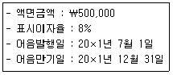
- 손실 ￦3,000
- 손실 ￦1,000
- ￦0
- 이익 ￦1,000
- 이익 ￦3,000
(정답률: 24%)
68. 다음은 (주)한국의 20×1년 말 자산에 관한 일부 자료이다. (주)한국의 20×1년 말 현금및현금성자산은?
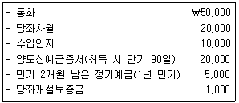
- ￦70,000
- ￦71,000
- ￦75,000
- ￦81,000
- ￦85,000
(정답률: 26%)
69. (주)한국의 20×1년 말 현재 당좌예금 잔액은 ￦1,000이고, 은행측 잔액증명서상 잔액은 ￦1,550이다. 기말 현재 그 차이 원인이 다음과 같을 때, 올바른 당좌예금 잔액은?
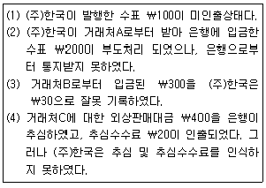
- ￦1,070
- ￦1,350
- ￦1,450
- ￦1,570
- ￦1,650
(정답률: 44%)
70. (주)한국은 20×1년 6월 말에 주식 A와 B를 각각 ￦500, ￦600에 취득하였다. 주식 A는 단기매매금융자산으로, 주식 B는 매도가능금융자산으로 분류하였으며, 보유기간 중 해당 주식의 손상은 발생하지 않았다. 다음 자료를 이용할 경우, 해당 주식 보유에 따른 기말평가 및 처분에 관한 설명으로 옳은 것은?
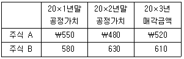
- 20×1년 당기순이익은 ￦30 증가한다.
- 20×1년 기타포괄손익은 ￦50 증가한다.
- 20×2년 말 기타포괄손익누계액에 표시된 매도가능금융자산평가이익은 ￦30이다.
- 20×2년 당기순이익은 ￦10 증가한다.
- 20×3년 금융자산처분이익은 ￦20이다.
(정답률: 18%)
71. 다음은 20×1년 초에 설립된 (주)대전의 당기 중 발생 거래의 기말 상황이다. (주)대전의 20×1년 말 금융부채는?
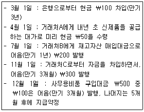
- ￦550
- ￦600
- ￦850
- ￦1,100
- ￦1,150
(정답률: 5%)
72. (주)한국은 전환원가에 대해 활동기준원가계산을 적용하고 있다. 회사의 생산 활동, 활동별 배부기준, 전환원가 배부율은 다음과 같다. 당기에 완성된 제품은 총 50단위이고, 제품 단위당 직접재료원가는 ￦100이다. 제품 1단위를 생산하기 위해서는 2시간의 기계작업시간과 5개의 부품이 소요된다. 당기에 생산된 제품 50단위의 총제조원가는?
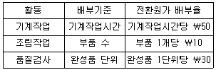
- ￦9,000
- ￦12,000
- ￦14,000
- ￦16,000
- ￦18,000
(정답률: 23%)
73. (주)한국은 단일제품을 생산ㆍ판매하고 있다. 내년도 예정 생산량 2,000단위를 기준으로 편성된 제조원가 예산은 다음과 같으며, 제품의 단위당 판매가격은 ￦20이다. (주)한국은 거래처로부터 단위당 ￦12에 제품 100단위를 구매하겠다는 특별주문을 받았다. (주)한국은 특별주문 수량을 생산하는데 필요한 여유생산설비를 충분히 확보하고 있으나, 초과근무로 인하여 특별주문 단위당 ￦2의 원가가 추가로 발생한다. (주)한국이 특별주문을 수락할 경우, 내년도 영업이익의 증감은? (단, 기초 및 기말 재고자산은 없으며, 특별주문이 기존 시장에 미치는 영향은 없다.)
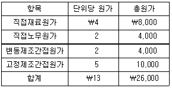
- ￦200 증가
- ￦300 감소
- ￦500 감소
- ￦1,000 감소
- ￦1,000 증가
(정답률: 0%)
74. (주)한국은 결합공정에서 제품 A, B, C를 생산한다. 당기에 발생된 결합원가 총액은 ￦40,000이며, 결합원가는 분리점에서의 상대적 판매가치를 기준으로 제품에 배분된다. 분리점에서의 단위당 판매가격과 생산량은 다음과 같다. 추가가공 할 경우, 제품별 추가가공원가와 추가가공 후 단위당 판매가격은 다음과 같다. 추가가공이 유리한 제품만을 모두 고른 것은? (단, 추가가공 공정에서 공손과 감손은 발생하지 않고, 생산량은 모두 판매되며, 기초 및 기말 재공품은 없다.)
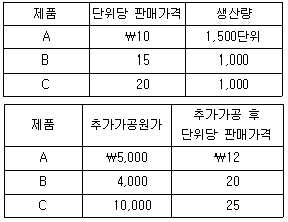
- A
- B
- A, B
- A, C
- B, C
(정답률: 8%)
75. (주)한국은 정상원가계산(normal costing)을 적용하고 있으며, 제조간접원가 배부기준은 직접노무시간이다. 20×1년 제조간접원가 예산은 ￦10,000이고, 예정 직접노무시간은 100시간이었다. 20×1년 실제 직접노무시간은 90시간, 제조간접원가 부족(과소)배부액은 ￦1,000이었다. 제조간접원가 실제발생액은?
- ￦7,000
- ￦8,000
- ￦9,000
- ￦10,000
- ￦11,000
(정답률: 20%)
76. (주)한국은 단일공정에서 단일제품을 생산ㆍ판매하고 있다. 회사는 실제원가에 의한 종합원가계산을 적용하고 있으며, 원가흐름 가정은 선입선출법이다. 당기의 생산 활동에 관한 자료는 다음과 같다. 전환원가는 공정 전반에 걸쳐 균등하게 발생한다. 기말에 전환원가의 완성품환산량 단위당 원가는 ￦20으로 계산되었다. 당기에 실제로 발생한 전환원가는? (단, 공손과 감손은 발생하지 않았다.)
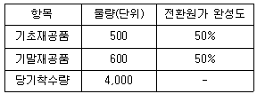
- ￦75,000
- ￦79,000
- ￦82,000
- ￦85,000
- ￦90,000
(정답률: 16%)
77. (주)한국은 표준원가계산을 적용하고 있다. 당기의 제품 생산량은 15단위이며, 직접노무원가와 관련된 자료는 다음과 같다. 직접노무원가 능률차이는? (단, 기초 및 기말 재공품은 없다.)
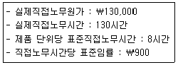
- ￦9,000 불리
- ￦10,000 불리
- ￦12,000 불리
- ￦13,000 불리
- ￦22,000 불리
(정답률: 12%)
78. (주)대한은 20×1년 초 다음과 같은 조건의 사채를 발행하고, 상각후원가로 측정하였다. 만기를 1년 앞 둔 20×4년 말에 현금이자 지급 후 동 사채를 ￦95,000에 상환하였을 경우, 사채상환손익은? (단, 계산과정에서 단수차이가 있는 경우 가장 근사치를 선택한다.)
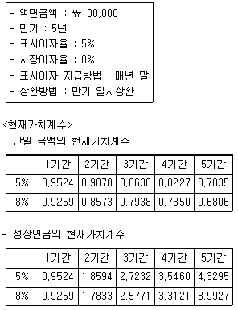
- 손실 ￦5,000
- 손실 ￦2,220
- ￦0
- 이익 ￦2,220
- 이익 ￦5,000
(정답률: 4%)
79. (주)한국은 20×1년 초에 설립되었으며, 20×1년도 제조원가 및 재고자산과 관련된 자료는 다음과 같다. 20×1년도 매출원가는?
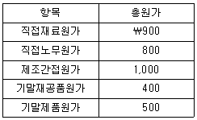
- ￦1,800
- ￦2,200
- ￦2,600
- ￦2,800
- ￦3,600
(정답률: 23%)
80. (주)한국은 단일제품을 생산ㆍ판매하고 있으며, 20×1년도 예산 자료는 다음과 같다. 20×1년도 예산 고정원가 총액은 ￦60,000이다. 회사는 생산설비를 충분히 보유하고 있으며, 법인세율은 20%이다. 세후목표영업이익 ￦70,000을 달성하기 위한 판매량은?
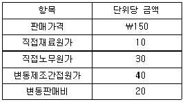
- 1,500단위
- 2,000단위
- 2,350단위
- 2,600단위
- 2,950단위
(정답률: 16%)
3과목: 공동주택시설개론
81. 건축물의 구조에 관한 설명으로 옳지 않은 것은?
- 내력벽 구조는 자중과 상부로부터 전달되는 수직 및 수평방향의 하중을 벽체가 부담하도록 설계된 구조이다.
- 가구식 구조는 가늘고 긴 부재를 접합하여 뼈대를 만드는 구조로 부재 접합부에 따라 구조강성이 결정된다.
- 일체식 구조는 라멘구조라고도 하며 기둥과 보를 이동단으로 접합한 구조이다.
- 조적식 구조는 벽돌, 시멘트 블록 등을 접착재료로 쌓아 만든 구조이다.
- 조립식 구조는 부재를 규격화하여 미리 공장에서 생산 및 가공한 후 현장에서 조립하는 구조이다.
(정답률: 24%)
82. 구조물에 작용하는 단기하중을 ＜보기＞에서 모두 고른 것은?
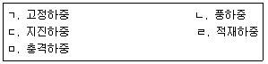
- ㄱ, ㄷ
- ㄴ, ㄹ
- ㄱ, ㄴ, ㅁ
- ㄱ, ㄷ, ㄹ
- ㄴ, ㄷ, ㅁ
(정답률: 52%)
83. 건축물의 지정 및 기초에 관한 설명으로 옳지 않은 것은?
- 지정은 기초를 안전하게 지지하기 위하여 기초를 보강하거나 지반의 내력을 보강하는 것이다.
- 지정 및 기초공사 재료는 시멘트 대체재료, 순환골재 등 순환자원의 사용을 적극적으로 고려한다.
- 연속기초는 건축물의 밑바닥 전부를 두꺼운 기초판으로 한 것이다.
- 복합기초는 기둥 간격이 좁아 2개 이상의 기둥들을 한 개의 기초판에 지지하는 구조이다.
- 현장타설 콘크리트 말뚝 기초공사 시 말뚝구멍을 굴착한 후 저면의 슬라임 제거에 유의해야 한다.
(정답률: 35%)
84. 연약지반에서 부등침하 저감대책으로 옳은 것은?
- 건물의 자중을 크게 한다.
- 건물의 평면길이를 길게 한다.
- 상부구조의 강성을 작게 한다.
- 지하실을 강성체로 설치한다.
- 인접 건물과의 거리를 좁힌다.
(정답률: 47%)
85. 철근콘크리트 구조에 관한 설명으로 옳지 않은 것은?
- 철근콘크리트 구조는 부재의 형상 및 치수를 자유롭게 구성할 수 있어 다양한 형태의 구조물을 만들 수 있다.
- 콘크리트와 철근 상호간의 부착성이 양호하여 일체 거동이 가능하다.
- 콘크리트는 산성이므로 철근의 부식을 방지한다.
- 철근콘크리트 구조는 높은 강성과 질량으로 진동에 대한 저항성이 크다.
- 철근과 콘크리트는 열팽창률이 거의 같으므로 구조체로서 일체성이 높다.
(정답률: 43%)
86. 콘크리트의 균열발생 원인을 ＜보기＞에서 모두 고른 것은?
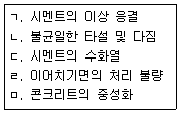
- ㄱ, ㄹ
- ㄴ, ㄷ
- ㄱ, ㄷ, ㅁ
- ㄴ, ㄷ, ㄹ, ㅁ
- ㄱ, ㄴ, ㄷ, ㄹ, ㅁ
(정답률: 34%)
87. 철골구조에 관한 설명으로 옳지 않은 것은?
- 강재는 균질도가 높고 철근콘크리트 구조보다 강도가 커서 건물의 중량을 가볍게 할 수 있다.
- 공법이 자유롭고 큰 부재를 사용할 수 있어 스팬이 큰 구조물을 축조할 수 있다.
- 내화적 구조로 설계 및 시공시 내화피복에 대한 대비가 필요 없다.
- 콘크리트는 인성이 작지만 철골구조의 강재는 인성이 크다.
- 철골구조는 일반적으로 부재단면에 비하여 길이가 길어 좌굴되기 쉽다.
(정답률: 40%)
88. 철골구조의 접합에 관한 설명으로 옳지 않은 것은?
- 철골구조는 공장에서 가공한 강재를 현장에서 조립하는 방식으로 시공한다.
- 용접은 볼트접합에 비해 단면 결손이 있으나, 소음발생이 적은 장점이 있다.
- 고장력 볼트접합은 접합부 강성이 높아 변형이 거의 없다.
- 고장력 볼트접합은 내력이 큰 볼트로 접합재를 강하게 조여 생기는 마찰력을 통해 힘을 전달한다.
- 용접은 시공기술에 따라 접합강도의 차이가 있으며 열에 의한 변형 등이 발생할 수 있다.
(정답률: 28%)
89. 벽돌쌓기에 관한 설명으로 옳지 않은 것은?
- 하루의 쌓기 높이는 1.2m를 표준으로 하고, 최대 1.5m 이하로 한다.
- 가로 및 세로줄눈의 너비는 공사시방서에서 정한 바가 없을 때에는 10mm를 표준으로 한다.
- 쌓기 직전에 붉은 벽돌은 물축임을 하지 않고, 시멘트 벽돌은 물축임을 한다.
- 연속되는 벽면의 일부를 트이게 하여 나중쌓기로 할 때에는 그 부분을 층단 들여쌓기로 한다.
- 벽돌쌓기는 공사시방서에서 정한 바가 없을 때에는 영식(영국식)쌓기 또는 화란식(네덜란드식)쌓기로 한다.
(정답률: 31%)
90. 여닫이 창호에 사용하는 창호철물이 아닌 것은?
- 크레센트(crescent)
- 피봇힌지(pivot hinge)
- 레버터리힌지(lavatory hinge)
- 도어 클로저(door closer)
- 실린더 자물쇠(cylinder lock)
(정답률: 32%)
91. 타일공사에 관한 설명으로 옳지 않은 것은?
- 도기질 타일은 자기질 타일에 비하여 흡수율이 높으며, 내장용으로 사용한다.
- 벽타일 붙이기에서 내장타일 붙임공법에는 압착붙이기, 개량압착붙이기, 동시줄눈붙이기가 있다.
- 모자이크타일 붙이기를 할 경우 붙임 모르타르를 바탕면에 초벌과 재벌로 두 번 바르고, 총 두께는 4mm~6mm를 표준으로 한다.
- 타일에서 동해란 타일 자체가 흡수한 수분이 동결함에 따라 생기는 균열과 타일 뒷면에 스며든 물이 얼어 타일 전체를 박리시킨 것이다.
- 타일붙임면의 모르타르 바탕 바닥면은 물고임이 없도록 구배를 유지하되 1/100을 넘지 않도록 한다.
(정답률: 20%)
92. 시멘트 모르타르 바름의 일반적인 시공순서로 옳은 것은?
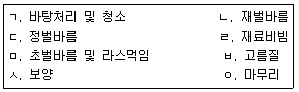
- ㄱ-ㄹ-ㅁ-ㅂ-ㄴ-ㄷ-ㅇ-ㅅ
- ㄱ-ㄹ-ㅂ-ㅁ-ㄴ-ㄷ-ㅅ-ㅇ
- ㄱ-ㅂ-ㄹ-ㅁ-ㄴ-ㄷ-ㅅ-ㅇ
- ㄹ-ㄱ-ㅁ-ㄴ-ㅂ-ㄷ-ㅇ-ㅅ
- ㄹ-ㄱ-ㅂ-ㅁ-ㄴ-ㄷ-ㅇ-
(정답률: 30%)
93. 아스팔트 방수공사에서 루핑 붙임에 관한 설명으로 옳지 않은 것은?
- 일반 평면부의 루핑 붙임은 흘려 붙임으로 한다.
- 루핑의 겹침 폭은 길이 및 폭 방향 100mm 정도로 한다.
- 볼록, 오목 모서리 부분은 일반 평면부의 루핑을 붙이기 전에 폭 300mm 정도의 스트레치 루핑을 사용하며 균등하게 덧붙임한다.
- 루핑은 원칙적으로 물흐름을 고려하여 물매의 위쪽에서부터 아래쪽을 향해 붙인다.
- 치켜올림부의 루핑은 각층 루핑의 끝이 같은 위치에 오도록 하여 붙인 후, 방수층의 상단 끝부분을 누름철물로 고정하고 고무 아스팔트계 실링재로 처리한다.
(정답률: 35%)
94. 타일 1장의 크기가 200×200mm이고, 줄눈너비가 6mm일 때, 벽면적 100m2에 소요되는 타일의 정미량(장)은? (단, 소수점 셋째자리에서 반올림)
- 2,156.49
- 2,256.49
- 2,356.49
- 2,456.49
- 2,556.49
(정답률: 26%)
95. 도장공사에 관한 설명으로 옳지 않은 것은?
- 롤러도장은 붓도장보다 도장속도가 빠르며 붓도장과 같이 일정한 도막두께를 유지할 수 있는 장점이 있다.
- 방청도장에서 처음 1회째의 녹막이 도장은 가공장에서 조립 전에 도장함이 원칙이다.
- 주위의 기온이 5℃ 미만이거나 상대습도가 85%를 초과할 때는 도장작업을 피한다.
- 스프레이 도장에서 도장거리는 스프레이 도장면에서 300mm를 표준으로 하고 압력에 따라 가감한다.
- 불투명한 도장일 때에는 하도, 중도, 상도 공정의 각 도막 층별로 색깔을 가능한 달리한다.
(정답률: 32%)
96. 표준품셈에서 5% 할증률에 해당하는 재료는?
- 붉은벽돌
- 시멘트벽돌
- 내화벽돌
- 모자이크타일
- 자기타일
(정답률: 44%)
97. 재료의 특성상 장식을 목적으로 사용하는 유리는?
- 에칭글라스(샌드블라스트글라스)
- 액정 조광 유리
- 저방사(Low-E) 유리
- 스팬드럴 유리
- 망입ㆍ선입 유리
(정답률: 38%)
98. 콘크리트공사에서 시멘트 분말도가 크면 나타나는 현상으로 옳지 않은 것은?
- 수화작용이 빠르다.
- 조기강도가 커진다.
- 시공연도가 좋아진다.
- 균열발생이 적어진다.
- 블리딩 현상이 감소된다.
(정답률: 24%)
99. 홈통공사에 관한 설명으로 옳지 않은 것은?
- 처마 홈통은 끝단막이, 물받이통 연결부, 깔때기관 이음통 및 홈통걸이 등 모든 부속물을 연결 부착하여 설치한다.
- 처마 홈통 제작 시 단위길이는 2,400mm~3,000mm 이내로 한다.
- 처마 홈통의 이음부는 겹침부분이 최소 30mm 이상으로 제작한다.
- 선홈통의 하단부 배수구는 우배수관에 직접 연결하고 연결부 사이의 빈틈은 시멘트 모르타르로 채운다.
- 처마 홈통 연결관과 선홈통 연결부의 겹침길이는 최소 50mm 이상이 되도록 한다.
(정답률: 38%)
100. 방습공사에 관한 설명으로 옳지 않은 것은?
- 방습층에 방수모르타르 바름을 할 경우 바름두께 및 회수는 정한 바가 없을 때 두께 15mm 내외의 1회 바름으로 한다.
- 신축성 시트계 방습재료에는 비닐필름방습지, 플라스틱 금속박 방습재료, 폴리에틸렌 방습층 등이 있다.
- 방습재료의 품질기준을 정하는 항목에서 강도는 23℃에서 15N 이상이고 발화하지 않아야 한다.
- 아스팔트계 방습공사에서 수직 방습공사의 밑부분이 수평과 만나는 곳에는 밑변 50mm, 높이 50mm 크기의 경사끼움 스트립을 설치한다.
- 콘크리트 다짐바닥, 벽돌깔기 등의 바닥면에 방습층을 둘 때에는 잡석다짐 또는 모래다짐 위에 아스팔트 펠트나 비닐지를 깔고 그 위에 콘크리트 또는 벽돌깔기를 한다.
(정답률: 23%)
101. 정보통신과 에너지기술을 융합ㆍ활용하여 건물에 최적의 환경을 제공하고 에너지를 효율적으로 관리하는 시스템은?
- EPI
- BEMS
- Commissioning
- TAB
- CEC
(정답률: 30%)
102. 건축설비의 기본사항으로 옳지 않은 것은?
- 순수한 물은 1기압 하에서 4℃일 때 가장 무겁고, 그 부피는 최소가 된다.
- 액체의 압력은 임의의 면에 대하여 수직으로 작용하며, 액체 내 임의의 점에서 압력세기는 어느 방향이나 동일하게 작용한다.
- 일정량의 기체 체적과 압력의 곱은 기체의 절대온도에 비례한다.
- 유체의 마찰력은 접촉되는 고체 표면의 크기, 거칠기, 속도의 제곱에 반비례한다.
- 열은 고온 물체에서 저온 물체로 자연적으로 이동하지만, 저온 물체에서 고온 물체로는 그 자체만으로는 이동할 수 없다.
(정답률: 27%)
103. 건물 내의 급수방식에 관한 설명으로 옳지 않은 것은?
- 펌프직송방식은 정속방식과 변속방식이 있다.
- 수도직결 방식은 기계실 및 옥상 탱크가 불필요하고, 단수 시 급수가 불가능하다.
- 압력탱크 방식은 단수 시 저수탱크의 물을 이용할 수 있으며, 옥상탱크가 불필요하다.
- 펌프직송방식은 펌프의 가동과 정지 시 급수압력의 변동이 있으며, 비상전원 사용시를 제외하고 정전 시 급수가 불가능하다.
- 고가탱크 방식은 옥상탱크가 필요하며, 수도직결 방식에 비해 수질오염의 가능성이 낮고 급수압력의 변동이 적다.
(정답률: 40%)
104. 급수 설비의 수질오염방지 대책에 관한 설명으로 옳지 않은 것은?
- 수조는 부식이 적은 스테인리스 재질을 사용하여 수질에 영향을 주지 않도록 한다.
- 음료수 배관과 음료수 이외의 배관은 접속시켜 설비 배관의 효율성을 높이도록 한다.
- 단수 등이 발생 시 일시적인 부압에 의한 배수의 역류가 발생하지 않도록 토수구 공간을 두거나 역류방지기 등을 설치한다.
- 배관 내에 장시간 물이 흐르면 용존산소의 영향으로 부식이 진행되므로 배관류는 부식에 강한 재료를 사용하도록 한다.
- 저수탱크는 필요 이상의 물이 저장되지 않도록 하고, 주기적으로 청소하고 관리하도록 한다.
(정답률: 43%)
1⑤. 건물의 급탕설비에 관한 설명으로 옳지 않은 것은?
- 개별식 급탕방식은 긴 배관이 필요 없으므로 배관에서의 열손실이 적다.
- 중앙식 급탕방식은 초기에 설비비가 많이 소요되나, 기구의 동시 이용률을 고려하여 가열장치의 총용량을 적게 할 수 있다.
- 기수혼합식은 증기를 열원으로 하는 급탕방식으로 열효율이 낮다.
- 중ㆍ소 주택 등 소규모 급탕설비에서는 설비비를 적게 하기 위하여 단관식을 채택한다.
- 신축이음쇠에는 슬리브형, 벨로즈형 등이 있다.
(정답률: 32%)
106. 원추형의 유량조절장치를 0°~90° 사이의 임의 각도만큼 회전시킴으로써 유량을 제어하는 것은?
- 드렌처(drencher)
- 체크밸브(check valve)
- 볼탭(ball tap)
- 스트레이너(strainer)
- 콕(cock)
(정답률: 38%)
107. 배수관에서 트랩의 봉수파괴 원인을 모두 고른 것은?
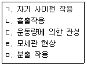
- ㄱ, ㄹ
- ㄱ, ㄹ, ㅁ
- ㄴ, ㄷ, ㅁ
- ㄱ, ㄴ, ㄹ, ㅁ
- ㄱ, ㄴ, ㄷ, ㄹ, ㅁ
(정답률: 36%)
108. 오수처리정화 설비에 관한 설명으로 옳지 않은 것은?
- 오수정화조의 성능은 BOD 제거율이 높을수록, 유출수의 BOD는 낮을수록 우수하다.
- SS는 부유물질, COD는 화학적산소요구량을 말한다.
- 부패탱크 방식의 처리과정은 부패조, 여과조, 산화조, 소독조의 순이다.
- 살수여상형, 평면산화형, 지하모래여과형 방식은 호기성 처리방식이다.
- 장시간 폭기방식의 처리과정은 스크린, 침전조, 폭기조, 소독조의 순이다.
(정답률: 29%)
109. 스프링클러 설비에 관한 설명으로 옳지 않은 것은?
- 천장이 높은 무대부를 비롯하여 공장, 창고, 준위험물 저장소에는 개방형 스프링클러 배관방식이 효과적이다.
- 비상전원 중 자가발전설비는 스프링클러 설비를 유효하게 20분 이상 작동할 수 있어야 한다.
- 가압송수장치의 정격토출 압력은 하나의 헤드선단에 0.1MPa 이상, 2.0MPa 이하의 방수압력이 될 수 있게 하여야 한다.
- 가압수조는 최대 상용압력 1.5배의 압력을 가하는 경우 물이 새지 않고 변형이 없도록 한다.
- 가압송수장치의 송수량은 0.1MPa의 방수압력기준으로 80ℓ/min 이상의 방수 성능을 가진 기준개수의 모든 헤드로부터의 방수량을 충족시킬 수 있는 양 이상으로 한다.
(정답률: 26%)
110. 일정한 온도 상승률에 따라 동작하며 공장, 창고, 강당 등 넓은 지역에 설치하는 화재감지기는?
- 차동식 분포형 감지기
- 정온식 스폿형 감지기
- 이온화식 감지기
- 보상식 스폿형 감지기
- 광전식 감지기
(정답률: 35%)
111. 온돌 및 난방설비 설치기준으로 옳지 않은 것은?
- 단열층은 열손실을 방지하기 위하여 배관층과 바탕층 사이에 단열재를 설치하는 층이다.
- 배관층은 단열층 또는 채움층 위에 방열관을 설치하는 층이다.
- 배관층과 바탕층 사이의 열저항은 심야전기이용 온돌의 경우는 제외하고 층간 바닥인 경우 해당 바닥에 요구되는 열관류저항의 60％ 이상, 최하층 바닥인 경우 70％ 이상이어야 한다.
- 바탕층이 지면에 접하는 경우 바탕층 아래와 주변 벽면에 높이 5cm 이상의 방수처리를 하여야 한다.
- 마감층은 수평이 되도록 설치하고, 바닥 균열 방지를 위해 충분히 양생하여 마감재의 뒤틀림이나 변형이 없도록 한다.
(정답률: 23%)
112. 증기트랩의 작동원리와 종류의 연결로 옳지 않은 것은?
- 기계식 - 플로트 트랩
- 기계식 - 버킷 트랩
- 온도조절식 - 다이어프램 트랩
- 온도조절식 - 디스크 트랩
- 온도조절식 - 밸로우즈 트랩
(정답률: 35%)
113. 증기난방과 온수난방을 비교한 설명으로 옳은 것은?
- 증기난방은 온수난방에 비해 제어가 용이하다.
- 증기난방은 온수난방에 비해 설비비가 비싸다.
- 증기난방은 온수난방에 비해 동결의 위험성이 높다.
- 증기난방은 온수난방에 비해 방열면적이 작다.
- 증기난방은 온수난방에 비해 쾌적성이 우수하다.
(정답률: 27%)
114. 풍량 1,200m3/h, 전압 300Pa, 회전수 500rpm, 전압효율 0.5인 송풍기의 회전수를 1,000rpm으로 변경할 경우 송풍기 축동력(kW)은?
- 1.6
- 3.2
- 5.2
- 6.4
- 9.6
(정답률: 12%)
115. 조명설비설계 순서로 옳은 것은?
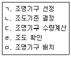
- ㄱ-ㄴ-ㄷ-ㄹ-ㅁ
- ㄱ-ㄷ-ㄴ-ㄹ-ㅁ
- ㄴ-ㄱ-ㄷ-ㅁ-ㄹ
- ㄴ-ㄱ-ㅁ-ㄷ-ㄹ
- ㄴ-ㄷ-ㄱ-ㅁ-ㄹ
(정답률: 24%)
116. 엘리베이터에 관한 설명으로 옳은 것은?
- 지연스위치는 멈춤스위치가 동작하지 않을 때 제2단의 동작으로 주회로를 차단한다.
- 비상용승강기의 승강로 구조는 각층으로부터 피난층까지 이르는 승강로를 단일구조로 연결하여 설치한다.
- 최종제한스위치는 종단 층에서 엘리베이터 카를 자동적으로 정지시킨다.
- 비상용승강기의 승강장 바닥면적은 옥외에 승강장을 설치하는 경우를 제외하고 비상용승강기 1대에 대하여 3m2 이상으로 한다.
- 비상멈춤장치는 전동기의 토크 소실시 엘리베이터 카를 정지시킨다.
(정답률: 26%)
117. 아파트단지 내 상가 1층에 실용적 720m3인 은행을 환기횟수 1.5회/h로 계획했을 때의 필요풍량(m3/min)은?
- 18
- 90
- 270
- 540
- 1,080
(정답률: 25%)
118. 건물의 냉방부하계산에 관한 설명으로 옳지 않은 것은?
- 냉방부하 계산시 재실자 발열은 고려하지 않는다.
- 실내ㆍ외 온도차가 클수록 건물 열손실은 증가한다.
- 벽체의 열관류율값이 낮을수록 건물 열손실은 감소한다.
- 최대 열부하계산으로 공조기 송풍량을 결정할 수 있다.
- 냉방부하에는 실내부하, 장치부하, 외기부하 등이 포함된다.
(정답률: 34%)
119. 흡수식 냉동기의 구성요소로 옳은 것은?
- 압축기, 증발기, 흡수기, 재생기
- 흡수기, 증발기, 응축기, 재생기
- 압축기, 흡수기, 응축기, 팽창밸브
- 압축기, 증발기, 응축기, 팽창밸브
- 흡수기, 팽창밸브, 응축기, 재생기
(정답률: 36%)
120. 지능형 홈네트워크 설비 설치 및 기술기준에 관한 설명으로 옳지 않은 것은?
- 홈게이트웨이는 세대단자함 또는 세대통합관리반에 설치할 수 있다.
- 개폐감지기는 현관출입문 상단에 설치하며 단독배선하여야 한다.
- 원격제어가 가능한 조명제어기를 세대 안에 1구 이상 설치하여야 한다.
- 무인택배함의 설치수량은 소형주택의 경우 세대수의 20%~30%로 설치하도록 의무화한다.
- 통신배관실의 출입문은 최소 폭 0.7m, 높이 1.8m 이상(문틀의 외측치수)의 잠금장치가 있는 출입문으로 설치하여야 한다.
(정답률: 43%)